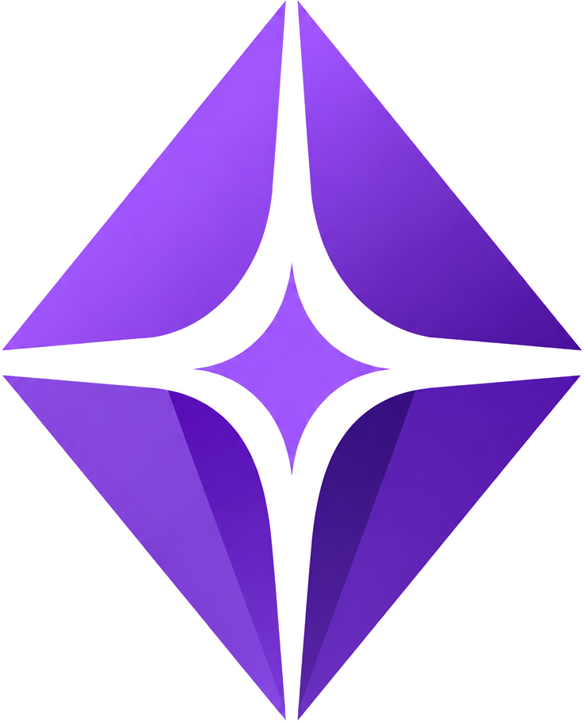

TrailUp
Console
Dashboard
Trilha
Classes
Personalizações
Ranks
Meus Dados
JP
Sair
PERSONALIZAÇÕES
Compare como o material fica para cada perfil BrainHex e visualize a personalização efetiva por aluno.
Atualizado há 12 s
Classe
{{ filterClasse }}
Tópico
{{ filterTopico }}
Conteúdo
{{ filterConteudo }}
Atualizar
Gerar tudo para o perfil
{{ genProfileName }}
Gerar tudo
Escolha uma classe e um tópico
O painel mostra o andamento da geração por perfil, por aluno e no agregado da turma. Selecione acima para começar.
Ver Física I · Cinemática
{{ filterConteudo }}
Conteúdo ampliado e gerado por blocos
Progresso dos perfis
0%
0 de 7 pronto(s)
7 sem material
!
1 perfil precisa da sua atenção
Socializer falhou na geração do áudio de Cinemática. Os outros 6 perfis seguem normalmente.
3
prontos
1
gerando
1
parcial
1
com falha
1
sem material
Por perfil
Estrutura e paleta
Por aluno
Turma
{{ zp.name }}
Sem material
{{ zp.tech }} · 0 aluno(s) com este perfil
Etapa atual
0%
Sem material
{{ f }}
Sem material
Ainda não há personalização gerada para este perfil no conteúdo selecionado.
Gerar
Comparativo dos 7 perfis — ordenado por alunos matriculados
Cinemática · 4 conteúdos
Perfil
Alunos
Status
Texto
Áudio
Apresentação
{{ pr.initials }}
{{ pr.name }}
{{ pr.students }}
{{ pr.studentsNote }}
{{ pr.statusLabel }}
{{ pr.textLabel }}
{{ pr.audioLabel }}
{{ pr.slidesLabel }}
{{ pr.actionLabel }}
Estrutura e paleta por perfil
Cinemática · 4 conteúdos
Perfil
Tom
Estilo
Nível
Prioritário
Paleta
{{ pl.initials }}
{{ pl.name }}
—
—
—
—
Aluno
Selecione o aluno
Selecione um aluno para ver a personalização efetiva dele.
Personalização efetiva
MC
Marina Corrêa
perfil usado: Mastermind (92% de afinidade)
pronto
Texto personalizado
4 de 4 · 68% lido
Áudio
9 min · ouvido
Apresentação
8 slides · não aberta
Abrir no dashboard
Ver material gerado
Regerar material
Todos os alunos
status da personalização de Cinemática
Buscar aluno
MC
Marina Corrêa
Mastermind
pronto
RA
Rafael Antunes
Survivor
sem material
BL
Beatriz Lemos
Seeker
pronto
NS
Nina Salgado
Socializer
com falha
HV
Helena Vasques
Achiever
gerando
CB
Caio Bertoldo
Conqueror
parcial
6 de 34 alunos
Alunos na turma
0
Perfil predominante
—
Média de acertos
0.0%
Conclusão média
0.0%
Nota média
0.0%
Distribuição de perfis BrainHex
Perfil dominante de cada aluno da turma, usado para priorizar os formatos gerados para o grupo.
Nenhum aluno com perfil BrainHex definido nesta turma ainda.
Alunos na turma
34
todos com perfil BrainHex respondido
Perfil predominante
Ma
Mastermind
9 de 34 alunos (26%)
Material pronto
78%
dos itens gerados nos 8 tópicos
Distribuição de perfis
Percentual de alunos por perfil dominante
Mastermind
26% · 9
Seeker
21% · 7
Achiever
18% · 6
Conqueror
12% · 4
Socializer
12% · 4
Daredevil
8% · 3
Survivor
3% · 1
Geração na turma inteira
56 combinações de tópico × perfil
prontos
41
em andamento
6
parciais
5
com falha
2
sem material
2
As 2 falhas estão no serviço de áudio, nos tópicos 3 e 6. Reprocessar leva cerca de 4 minutos.
Reprocessar falhas
{{ modal.initials }}
Conteúdo gerado
{{ modal.title }}
Nenhum material gerado ainda para este perfil.
Texto, áudio e apresentação para {{ modal.name }} ainda não foram criados para o conteúdo selecionado.
Gerar
Texto
Áudio
Apresentação
Prévia do texto gerado para o perfil {{ modal.name }} · {{ modal.wordCount }}
{{ modal.textPreview }}
Regenerar este texto
Áudio gerado para o perfil {{ modal.name }} · {{ modal.audioDuration }}
Roteiro: {{ modal.audioNote }}
Regenerar este áudio
{{ modal.slideCount }} slides gerados para o perfil {{ modal.name }} · regenere um slide isolado sem afetar os demais
Regenerar apresentação inteira
{{ sl.n }}
{{ sl.title }}
{{ sl.note }}
Regenerar slide
Slide {{ sl.n }}
{{ sl.title }}
{{ sl.body }}
O que você quer mudar?
Ex.: deixar o tom menos formal, ou trocar o exemplo do carro por um de esportes…
Pode deixar em branco — nesse caso, regenera com o mesmo direcionamento de antes.
Cancelar
Continuar
{{ regen.title }}
Motivo
{{ regen.reason }}
O que muda nesta geração
{{ c.text }}
{{ regen.keepNote }}
Cancelar
Confirmar regeneração
{{ regen.busyLabel }}
{{ regen.doneLabel }}
Escriba
O guia do professor · lê as personalizações geradas
Eu sou o Escriba — guardo os registros de geração. Pergunte algo como "que perfil está sem material?".
{{ m.text }}
Consultando os registros…
Perfil sem material?
Algum erro de geração?
Pergunte ao Escriba…